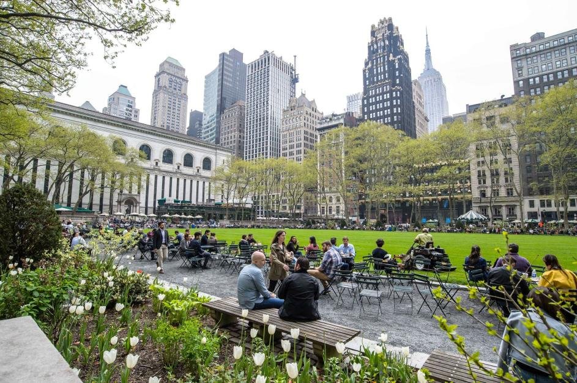

NO TE LO PODES PERDER

¿Estás preparando un viaje a Nueva York en 7 días?
Aunque siempre queda algo pendiente, una semana es ideal para darle un buen bocado a la Gran Manzana y descubrir sus lugares más emblemáticos.